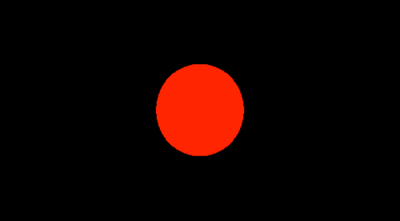
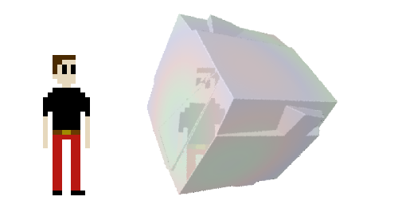

This is meant to be a soft introcution to the topic of sphere tracing, which you should be able to follow with little to no prior knowledge in graphics programming. I'll do my best to explain the theory behind the code as we go along so as to make this more than a copy-paste fiesta with no real understanding of what's going on under the hood. I'll be using shadertoy, coding the shader in GLSL so feel free to open up a new browser tab at https://www.shadertoy.com/new as a starting point and code along with me :)
In your new shadertoy shader, you should be greeted by an ondulating multicoloured gradient. You should also see a text editor containing the code for this shader either below it or off to the side. Delete the body of the mainImage() function and replace it like so:
void mainImage( out vec4 fragColor, in vec2 fragCoord )
{
fragColor = vec4(1.0, 0.0, 1.0, 1.0);
}Now click on the little play arrow at the bottom left of the editor to compile and run your code. The rainbow gradient should now be replaced by a lovely uniform shade of purple-ish pink-ish something. Why? How? WHAT IS THIS VOODOO MAGIC?
The code you've entered gets run on every pixel of the image in order to determine their individual final colour; this is what will enable us to generate images as crazy and complex as we like. The fragColor variable represents that specific pixel's colour - so, what this little snippet of code is doing is telling every pixel "aye bro, your colour is going to be vec4(1.0,0.0,1.0,1.0)." That's nice and all but... what does this vec4 thing even mean? vec4 itself doesn't mean anything special, it's a vector that holds 4 elements. Here, we are using these four elements to represent a colour using the RBGA format. The first number represents the amount of red in the colour, ranging from none (0.0) to fully red (1.0), the second and third numbers represent the amount of green and blue, and the last element represents the alpha - the transparency - of the colour, with 0.0 being fully transparent and 1.0 being fully opaque. Try changing around these four values in your code to see what sort of colours you can come up with! If you're unfamiliar with colour encoding this will give you a better sense of how these numbers interact. Do remember that these four numbers need to be in the [0-1] range. Think of them as percentages.
I'm sure you're in awe right now at this magestic shade of pink, but let's carry on over to using the UV coordinates. UV coordinates, you say? These represent the pixel's position in the image in an (u,v) coordinate system. The bottom left pixel will sit at (0.0,0.0) and the top right will be at (1.0,1.0). All the other pixels fall somewhere in-between. Let's use this to make the image go from black on the left to green on the right!
void mainImage( out vec4 fragColor, in vec2 fragCoord )
{
vec2 uv = fragCoord/iResolution.xy;
float green = uv.x;
fragColor = vec4(0.0, green, 0.0, 1.0);
}Let's break this down line by line. The first one calculates the UV coordinates for the current pixel. Here, fragCoord and iResolution are variables given to us by the program running the shader. fragCoord contains the (x,y) coordinates of the pixel on the screen, so if you were looking at the pixel in the middle of a 100x100 image, its coordinates would be (50,50). The iResolution variable holds the width and height of the image you're generating [note: iResolution is actually a vec3, but we only care about the first two components, namely width and height]. Calling iResolution.xy returns a vec2 containing the x and y elements of the iResolution vector. It should be obvious enough that dividing the pixel's position on the window (eg. (50,50)) by the total size of the window (eg. (100,100)) will give you the pixe's corresponding coordinates in the UV system.
Phew. Moving on to the next line. This one is easy; we take the x component of the UV coordinates (so, position of the pixel along the x axis) and assign it to the green variable. Next up we plug this green variable in the fragColor where the green colour value should be (the second position). This means that the green variable will have a value that ranges from 0.0 to 1.0 (because it's based on the UV coordinate of the pixel), with 0.0 on the left and 1.0 on the right. Bam, you have a gradient going form black to green.
This is the part where I feel I've conveyed enough of the basics in terms of reading pixel positions and assigning pixel colour to ramp it up drastically and saunter into the land of rays. Hold on to your hats.
From here on out I will be writing in terms of a conceptual 3D space. The goal is to render a virtual 3D object in this virtual 3D space using the simple building blocks I've explained above (and a bunch of slick math). The first thing we'll define in this 3D space is the camera. This is our own position in this 3D space. What pieces of information to we need to specify a camera in 3D space?
The first two may be obvious, by the third one not so much. Why do you need an 'up' vector pointing out the top of the camera? Take on the role of the camera for a second. If you look straight ahead of you, it's clear to see that your camera has a fixed position in 3D space and a fixed direction it's pointed to (ahead of you). Now if you tilt your head off to the side, the camera's position and direction will still be the same, but everything you see will have rotated. With only the position and direction of a camera, we cannot tell which 'tilt' of the head to use to render the scene. This is what the 'up' vector is for.
Let's define these three bits of information:
vec3 cameraPosition = vec3(0.0, 0.0, 10.0);
vec3 cameraDirection = vec3(0.0, 0.0, -1.0);
vec3 cameraUp = vec3(0.0, 1.0, 0.0);For each pixel in our window we want to cast a ray out towards the scene and find out if it hits a surface or not. But um... how exactly do we "cast" these rays?
Note that a ray is defined by a point and a direction vector. If you're unsure about how casting rays is supposed to help in any way, imagine you were stranded in a completely dark basement (jovial, I know) and only had a laser pointer in hand. If you were to aim the laser pointer and light it up, you could see where the red dot lands and determine that the point in 3D space that lit up under the light of your laser pointer is the closest surface to your laser pointer (in that specific direction). Alternatively, if you turned on the laser pointer but saw no red dot, you could infer that the laser didn't hit any surface (ie. you're in space or something). This may not make much sense in the physical world, but in our virtual 3D world it's completely plausible for a ray not to hit anything - if for example our world only has a sphere and nothing else, any ray that doesn't hit the sphere will never hit anything.
Imagine you had a transparent piece of plastic (the same sort of thing you would use on one of the old classroom projectors) on which you drew a grid, with each square in the grid being around 1x1 inch. Now if you held up this grid in front of your face (let's say about 1-2ft away), closed one eye and stared ahead, you would see different parts of the world through each square. These squares in your grid are the equivalent of the pixels we want to compute the colour of in our imaginary 3D world, and your eye is our virtual camera! The straight (imaginary) lines start at your eye, go through the middle of each square and intersect with the real world are analogous to the rays we want to cast in our 3D virtual world. What we want is a set of virtual lines (rays) that start at the camera's position and go through the virtual plastic grid. We want to then "draw" these lines in 3D space until they hit something.
So, how do we compute these rays? We need both the origin and the direction vector for each ray. The origin is easy; it's the same as the camera's position. The direction vector is a bit more involved. I won't give an in-depth math explanation of what the following code does, but in a nutshell it works like this (note that the code does NOT follow these point by point):
float PI = 3.14159265359;
float fov = 50.0;
float fovx = PI * fov / 360.0;
float fovy = fovx * iResolution.y/iResolution.x;
float ulen = tan(fovx);
float vlen = tan(fovy);
vec2 uv = fragCoord/iResolution.xy;
// generate the ray for this pixel
vec2 camUV = uv*2.0 - vec2(1.0, 1.0);
vec3 nright = normalize(cross(cameraUp, cameraDirection));
vec3 nup = normalize(cross(nright, cameraDirection));
vec3 ndir = normalize(cameraDirection);
vec3 pixel = cameraPosition + ndir + nright*camUV.x*ulen + nup*camUV.y*vlen;
vec3 rayDirection = normalize(pixel - cameraPosition);Writing out all of this has been exhausting, but we're so close to tangible results. So. Close.
ALRIGHT, so now we have the (hopefully) correct ray for the pixel following our virtual camera. We need to give it a virtual 3D world to interact with! THIS is where the difference lies between ray tracing and sphere tracing methods of rendering (so far all the steps we've taken would have been required for a ray tracing renderer as well).
A sphere tracing renderer only uses one function to define the 3D world's geometry. This function takes in a point in the 3D space and returns the distance between that point and the nearest surface in our world. Let's write a distance function for a world that contains a sphere centred at the origin (0.0,0.0,0.0) and with radius 1.0:
float distanceToNearestSurface(vec3 p){
return length(p) - 1.0;
}The length() function returns the length of a vector. In GLSL, we represent points in 3D space with vectors of length 3, so the length of the vector representing a 3D point represents the distance between the point and the origin (0.0,0.0,0.0). It should now be easy to see that this function does indeed tell you how far you are from the sphere. The caveat with this implementation is that things will start to get weird if you're inside the sphere, because you'll be given negative distances (wat?). For now however, this will do.
We now have a representation of our virtual world and for any given pixel, we have the associated ray. All that's left to add is the glue; the intersection algorithm.
Time for another thought experiment! Imagine you were blindfolded in the middle of a forest. You're playing a game with a friend (weird game that is, but I won't judge). The objective is to get as close as possible to a tree without touching it. You're only allowed to walk forward (straight ahead) and ask your friend how close to you the nearest tree is. How do you win the game?
The correspondence between this little game and our sphere tracer should be faily transparent; you're the ray, your friend is the distance function and the trees in the forests are the surface of your virtual 3D world. As you can see, the algorithm itself is pretty simple. Let's write it up:
bool intersectsWithWorld(vec3 p, vec3 dir){
float dist = 0.0;
for(int i = 0; i < 1000; i++){
float nearest = distanceToNearestSurface(p + dir*dist);
if(nearest < 0.01) return true;
dist += nearest;
}
return false;
}Some things to note here are that while loops are not allowed in GLSL, so instead we cap the number of iterations to 1000. This is suitable for this little example but in general, you'll want to adjust that value to balance out computational costs and accurate scene rendering. Another thing to note is that you would normally add an extra conditional check inside the for loop to see if your ray has traveled past a predetermined maximum distance, because you might not care about rendering your world beyond a certain distance (it's a fairly standard way of keeping the computational costs in check).
Now, putting it all together, this is the shader code I wound up with:
vec3 cameraPosition = vec3(0.0, 0.0, 10.0);
vec3 cameraDirection = vec3(0.0, 0.0, -1.0);
vec3 cameraUp = vec3(0.0, 1.0, 0.0);
float distanceToNearestSurface(vec3 p){
return length(p) - 1.0;
}
bool intersectsWithWorld(vec3 p, vec3 dir){
float dist = 0.0;
for(int i = 0; i < 1000; i++){
float nearest = distanceToNearestSurface(p + dir*dist);
if(nearest < 0.01) return true;
dist += nearest;
}
return false;
}
void mainImage( out vec4 fragColor, in vec2 fragCoord )
{
float PI = 3.14159265359;
float fov = 50.0;
float fovx = PI * fov / 360.0;
float fovy = fovx * iResolution.y/iResolution.x;
float ulen = tan(fovx);
float vlen = tan(fovy);
vec2 uv = fragCoord/iResolution.xy;
// generate the ray for this pixel
vec2 camUV = uv*2.0 - vec2(1.0, 1.0);
vec3 nright = normalize(cross(cameraUp, cameraDirection));
vec3 nup = normalize(cross(nright, cameraDirection));
vec3 ndir = normalize(cameraDirection);
vec3 pixel = cameraPosition + ndir + nright*camUV.x*ulen + nup*camUV.y*vlen;
vec3 rayDirection = normalize(pixel - cameraPosition);
float collidedWithWorld = 0.0;
if(intersectsWithWorld(cameraPosition, rayDirection))
collidedWithWorld = 1.0;
fragColor = vec4(collidedWithWorld, 0.0, 0.0, 1.0);
}You should see a black screen with a red circle in the middle. That red circle is the world you defined in your distance function - it's that 1.0 radius sphere at (0.0,0.0,0.0) :D
If for whatever reason your code isn't working, you can see my implementation here: https://www.shadertoy.com/view/4tsXzf
This might seem like lot of work for nothing, but believe me it's all uphill from here. The next steps are adding in lighting, new shapes, anti-aliasing, textures... there's so much to do and so many ways of generating pretty images! At the time of writing, the landing page for this site seems to only render on my laptop, on chrome. Any other browser or any other computer fails to render it, so here's a glimpse into what that's supposed to look like to give you an idea of what's possible to achieve with sphere tracing!
I'll write a Sphere Tracing 102 post sometime in the future which will cover lighting calculations and maybe one or two other things.